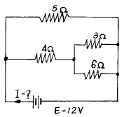
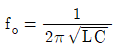
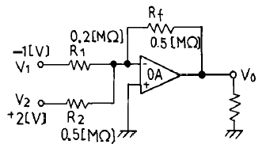
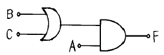
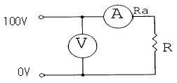
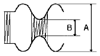
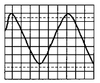

통신기기기능사 (2003-01-26 기출문제)
1과목: 전기전자공학
1. 그림과 같은 회로에서 전류 I는?

- 1.4A
- 2.4A
- 4.4A
- 8.4A
(정답률: 알수없음)

2. 여러개의 전지를 보다 경제적으로 사용하기 위해서 직병렬 혼합해서 사용하고 있는데 최대전류를 얻기 위한 경제적인 조건은? (단, m : 전지의 병렬수 , R : 외부저항 n : 병렬전지의 직렬수 , r : 전지내부저항)
- nr = mR
- mn = rR
- nR = mr
- R/r =m2/n
(정답률: 알수없음)
3. 비 정현파의 실효치는?
- 각 고조파의 실효치
- 기본파 및 각 고조파 실효치의 합
- 기본파 및 각 고조파 실효치의 평방근
- 기본파 및 각 고조파 실효치의 제곱의 합의 평방근
(정답률: 알수없음)
4. 60[㎐],10[A] 사인파 교류의 순시값 표시는?
- i = 10 sin 120πt
- i = 7.07 sin 377πt
- i = 14.14 sin 120πt
- i = 14.14 sin 377πt
(정답률: 알수없음)
5. R - L - C 직렬공진회로에 대한 설명중 틀린 것은?
- Ｃ의 양단전압은 Ｌ의 양단전압보다 크다.
- 공진시 회로에는 전류 Io=E/R가 흐른다.
- 공진조건은 ω02 LC = 1 이다.
- 공진주파수

이다.
(정답률: 알수없음)
6. 자석에 의한 자기 현상의 설명 중 옳은 것은?
- 서로 다른 극 사이에는 흡인력이 작용한다.
- 철심이 있으면 자속 발생이 어렵다.
- 자력선은 N극으로 들어와서 S극으로 나간다.
- 자력은 거리에 비례한다.
(정답률: 알수없음)
7. 자체 인덕턴스 4[H]의 코일에 18[J]의 에너지가 저장되어 있다. 이때, 코일에 흐르는 전류 I[A]는 얼마인가?
- 1.5[A]
- 3[A]
- 4.5[A]
- 9[A]
(정답률: 알수없음)
8. 자신보다 큰 원자가의 원자를 함유하여 과잉전자로 전기전도를 하는 반도체를 무엇이라고 하는가?
- P형 반도체
- N형 반도체
- 진성 반도체
- P - N반도체
(정답률: 알수없음)
9. 아래 그림은 가산기(adder)회로이다. 출력 Vo는 얼마인가?

- 0.5[V]
- 1[V]
- 1.5[V]
- 4.5[V]
(정답률: 알수없음)
10. 전압 증폭도가 600배이면 이득은 얼마인가? (단, log102 = 0.30, log103 = 0.47로 한다.)
- 40.4[㏈]
- 51.5[㏈]
- 55.4[㏈]
- 64.5[㏈]
(정답률: 알수없음)
11. 수정진동자를 발진회로에 사용하는 중요한 이유가 아닌 것은?
- 발진주파수의 변화가 적다.
- 발진파형에 일그러짐이 적다.
- 발진주파수의 안정도가 높다.
- 주위 온도에 강하다.
(정답률: 알수없음)
12. 발진회로에서 분주회로를 사용하게 되는 경우 분주회로의 역할은?
- 발진신호의 주파수를 높임
- 발진신호의 주파수를 낮춤
- 발진신호의 다른 신호를 더함
- 발진신호의 다른 신호를 곱함
(정답률: 알수없음)
13. 변조도가 1인 경우를 무엇이라고 하는가?
- 무변조
- 100[%] 변조
- 변조도 얕음
- 과변조
(정답률: 알수없음)
14. 변환된 주파수에서 본래의 주파수로 스펙트럼을 다시 천이시키는 주파수 복원 과정을 무엇이라고 하는가?
- 변조
- 억압
- 복조
- 위상반전
(정답률: 알수없음)
15. 입력 클럭신호가 들어 올 때마다 출력신호의 상태가 바뀌는 플립플롭은?
- RS
- JK
- T
- D
(정답률: 알수없음)
2과목: 전자계산기일반
16. 전자계산조직(EDPS)의 CPU에 해당하는 것은 사람의 어느 부분인가?
- 머리
- 심장
- 입
- 다리
(정답률: 알수없음)
17. 다음 중 연산 장치에 대한 설명으로 옳은 것은?
- 연산 명령을 해석한다.
- 연산 작용은 주로 덧셈기에서 한다.
- 연산은 주로 10진법으로 한다.
- 계산기에 필요한 명령을 기억한다.
(정답률: 알수없음)
18. 다음 그림의 논리식은 어느것에 해당 하는가?

- F = AㆍB+BㆍC
- F = AㆍBㆍC
- F = Aㆍ(B+C)
- F = Aㆍ(B-C)
(정답률: 알수없음)
19. 컴퓨터를 더욱 효율적으로 사용하기 위하여 작성된 동작 프로그램의 집합과 관계 깊은 것은?
- 스프레드 시트(spread sheet)
- 프로그램 언어(program language)
- 시스템 소프트웨어(system software)
- 전자 우편(electronic mail)
(정답률: 알수없음)
20. 전자계산기의 프로그램용 언어에 속하지 않는 것은?
- 기계어
- 어셈블리 언어
- 컴파일러 언어
- 과학용 언어
(정답률: 알수없음)
21. 1Mbyte(메가 바이트)의 용량은 정확히 몇(byte)인가?
- 1,048,576byte
- 1,000,000byte
- 1,024,000byte
- 100,000byte
(정답률: 알수없음)
22. 컴퓨터의 5대 기본요소가 아닌 것은?
- 제어장치
- 변복조장치
- 입·출력장치
- 기억장치
(정답률: 알수없음)
23. 주기억 장치에서 번지(address)를 부여하는 최소단위는?
- nibble
- word
- byte
- bit
(정답률: 알수없음)
24. Encoder에 대한 설명으로 적합한 것은?
- 입력 신호를 2진수로 부호화하는 회로이다.
- 2진 부호를 10진 부호로 변환하는 회로이다.
- 출력 단자에 신호를 보내는 회로이다.
- 입력 신호를 해독하는 해독기이다.
(정답률: 알수없음)
25. 다음 중 UNIX 운영체제의 기초가 되는 언어는?
- BASIC
- PASCAL
- ASSEMBLY
- C-언어
(정답률: 알수없음)
26. 통신 전송 선로의 1차 정수는?
- α (감쇠 정수)
- β (위상 정수)
- γ (전파 정수)
- G (누설 컨덕턴스)
(정답률: 알수없음)
27. 정현파가 존재할 때 "1"에 대응시키고, 없을 때 "0"에 대응시키는 변조방식은?
- BPSK
- ASK
- QAM
- FSK
(정답률: 알수없음)
28. 다음은 국내에서 사용되고 있는 교환기의 종류이다. 이 중에서 전전자식 교환기가 아닌 것은?
- AXE-10
- TDX-1B
- M10-CN
- NO4-ESS
(정답률: 알수없음)
29. 전자교환기의 통화로계 장치의 구성 요소가 아닌 것은?
- 라인 메모리 장치
- 통화로 장치
- 주사장치
- 통화로 제어장치
(정답률: 알수없음)
30. TCP/IP라는 프로토콜 집합체를 이용하여 다양한 기술과 장치로 이루어진 여러가지 망들 사이에서 정보의 전송이 가능하도록 구축한 연동망을 무엇이라 하는가?
- 종합 정보 통신망
- 인터넷
- 위성통신망
- 부가 가치 통신망
(정답률: 알수없음)
3과목: 통신기기일반
31. 다음 중 TDX-10 교환기 시스템의 특징이 아닌 것은?
- 용량 확장이 쉬운 모듈화 구조
- 분산 제어 방식을 적용
- 직렬 처리 운영 체계를 적용
- 데이터를 효율적으로 관리하는 DBMS(database management system) 적용
(정답률: 알수없음)
32. 안테나의 효율을 높이기 위하여 복사저항과 손실저항과의 관계는 어떻게 되어야 효율이 높아지는가?
- 복사저항과 손실저항을 적게한다.
- 복사저항을 크게하고, 손실저항을 가능한 적게한다.
- 복사저항을 작게하고, 손실저항을 가능한 크게한다.
- 복사저항과 손실저항을 크게한다.
(정답률: 알수없음)
33. 레이저 광선이 광섬유를 통하여 흐를 때, 굴절률이 다른 두 개의 물질에 빛이 투과할 때 경계면에서 그 빛의 일부는 반사하고, 나머지는 굴절하게 되며, 굴절률과 굴절각 및 입사각과 관련하여 도파하게 되는데, 이러한 법칙을 무엇이라 하는가?
- 키르히호프의 법칙
- 플레밍의 왼속 법칙
- 옴의 법칙
- 스넬의 법칙
(정답률: 알수없음)
34. 다음 그림과 같은 직류회로에서 입력 전압이 100[V], 전류계의 내부저항(Ra)이 10[Ω]이고, 부하(R)가 990[Ω]일 때, 부하에서 소비되는 전력은 얼마인가?

- 10 [W]
- 1 [W]
- 9.9 [W]
- 0.99 [W]
(정답률: 알수없음)
35. 선로의 주파수 대역을 유효하게 사용하기 위하여 한쪽의 측파대만을 통과시키기 위해 사용되는 필터는?
- 저역 필터
- 고역 필터
- 대역 통과 필터
- 대역 소거 필터
(정답률: 알수없음)
36. 전화기 구성중 수화기(Receiver)의 3대 구성품으로 진동판, 영구 자석, 코일이 있는데 이중 영구자석을 사용하는 가장 큰 이유는 무엇인가?
- 수화 음성을 정확하게 진동시키고 재생시키기 위해
- 측음을 방지하기 위하여
- 통화 전류에 의한 자속을 만들기 위해
- 진동판의 공진현상을 억제하기 위해
(정답률: 알수없음)
37. 주파수 분할 다중화 방식의 특징으로 틀린 것은?
- 주파수 대역을 몇 개의 작은 대역폭으로 나누어 사용함.
- 각 부채널을 차례로 스캔하여 전송함.
- 시분할 다중화에 비하여 구조가 간단하고 가격이 저렴함.
- 주로 저속도의 장비에 이용 가능하고 멀티포인트방식의 구성에 적합함.
(정답률: 알수없음)
38. 연속적인 아날로그 신호에서 크기값만을 일정한 간격으로 만드는 작업을 무엇이라 하는가?
- 표본화
- 양자화
- 부호화
- 복호화
(정답률: 알수없음)
39. 베이스 밴드 신호중 "0"을 (+)전압에, "1"을 (-)전압에 대응시키는 베이스 밴드 신호는?
- 단류 NRZ
- 단류 RZ
- 복류 NRZ
- 복류 RZ
(정답률: 알수없음)
40. 네트워크 구성의 기본적인 방법이며, 중앙에 컴퓨터가 있고 이를 중심으로 터미널들이 연결되는 형태는?
- 성형(Star)
- 나무형(Tree)
- 망형(Mesh)
- 링형(Ring)
(정답률: 알수없음)
41. 시간별 호의 발생량이 다른 상태에서 하루 중 가장 많은 호가 발생하는 1시간을 나타내는 용어는?
- 최번시
- 보류 시간
- 최번시 집중률
- 평균 보류 시간
(정답률: 알수없음)
42. 전화기에서 음성에너지를 전기에너지로 변환하는 장치는?
- 수화기
- 송화기
- 정류기
- 모뎀
(정답률: 알수없음)
43. 다음의 피변조파에 대한 변조도는?

- A+B/A-B
- A-B/A+B
- A×B/A+B
- A+B/A×B
(정답률: 알수없음)
44. 오실로스코프를 사용하여 피측정치의 파형을 측정하니 그림과 같았다. P-P 전압과 주파수는? (단, volt/div는 1volt/div이고, time/div는 1[mS] 이다)

- 1[V], 1[HZ]
- 3[V], 100[HZ]
- 6[V], 166.7[HZ]
- 10[V], 166.7[HZ]
(정답률: 알수없음)
45. 병렬 전송에 대한 설명 중 틀린 것은?
- 전송 속도가 빠르다
- 단말기 구성이 직렬 전송보다 단순하다
- 장거리 전송에 이용된다
- 전체 비용이 높아진다
(정답률: 알수없음)
4과목: 통신기기설비기준
46. 전기통신 업무의 전부 또는 일부를 제한 하거나 정지할 수 있는 경우가 아닌 것은?
- 전보의 소통을 원활히 할 필요가 있을 때
- 중요 통신을 확보하기 위하여 필요한 때
- 국가비상사태가 발생한 때
- 천재지변이 발생한 때
(정답률: 알수없음)
47. 한국정보통신기술협회의 기능은?
- 전기통신기자재의 형식승인 검정기관이다.
- 전기통신의 표준화를 추진하는 기구이다.
- 전기통신사업의 육성발전을 위한 협의기관이다.
- 전기통신기술 진흥계획의 심의기구이다.
(정답률: 알수없음)
48. 전기통신사업의 공정한 경쟁환경의 조성 및 전기통신설비의 이용자의 권익보호에 관한 사항의 심의를 위하여 정보통신부에 설치한 기구는?
- 통신위원회
- 형식승인심의회
- 정보통신윤리위원회
- 지정시험기관
(정답률: 알수없음)
49. 전기통신회선설비를 설치하고 이를 이용하여 공공의 이익과 국가산업에 미치는 영향등을 참작하여 전신ㆍ전화역무 등 법령이 정하는 종류와 내용의 전기통신역무를 제공하는 사업을 무엇이라 하는가?
- 특정통신사업
- 부가통신사업
- 기간통신사업
- 공중통신사업
(정답률: 알수없음)
50. 기간통신사업의 허가를 받은자로부터 전기통신회선설비를 임차하여 전기통신역무를 제공하는 전기통신사업을 무엇이라 하는가?
- 공중통신사업
- 부가통신사업
- 기간통신사업
- 특정통신사업
(정답률: 알수없음)
51. 기간통신사업자가 다른 정보통신설비와의 정보의 상호전달을 위하여 공시하여야 하는 것은?
- 요금규정
- 상호협정
- 통신규약
- 안전대책
(정답률: 알수없음)
52. 전화교환설비의 평형회로 회선의 특성임피던스는?
- 75Ω
- 135Ω
- 350Ω
- 600Ω
(정답률: 알수없음)
53. 기술기준에서 정의하고 있는 고주파수는 얼마 이상의 주파수를 말하는가?
- 1[MHz] 이상의 전자파의 주파수
- 5[KHz] 이상의 전자파의 주파수
- 3.4[KHz]를 초과하는 전자파의 주파수
- 1[KHz]를 초과하는 전자파의 주파수
(정답률: 알수없음)
54. 전기통신회선의 심선상호간의 절연저항은 직류 500[V] 절연저항계로 측정하여 몇[㏁] 이상이어야 하는가?
- 5
- 10
- 15
- 20
(정답률: 알수없음)
55. 정보통신공사업의 등록기준에 포함되지 않는 것은?
- 기술능력
- 자본금
- 작업실(사무실)
- 공사범위
(정답률: 알수없음)
56. 전기통신설비의 건설 또는 보전에 종사하는자가 전기통신설비의 설치를 위하여 타인의 주택 구내를 출입하고자 할 때의 절차는?
- 거주자에게 사전통고를 하여야 한다.
- 거주자의 사전 승낙을 얻어야 한다.
- 공사후 출입 사유를 설명하면 된다.
- 사유재산의 침해이므로 출입할 수 없다.
(정답률: 알수없음)
57. 전기통신역무를 제공하는 전기통신사업자의 통신설비는 무엇에 적합하도록 유지.보수하여야 하는가?
- 대통령령이 정하는 시행령
- 정보통신부령이 정하는 기술기준
- 전기통신사업자가 결정한 이용약관
- 형식승인심의회에서 정한 성능시험기준
(정답률: 알수없음)
58. 단말장치의 전자파 장해로부터 보호 기준은 어떤 법령이 정하는가?
- 공업규격에 의한 법령
- 기간통신 사업 관리에 의한 법령
- 전파법에 의한 법령
- 관계 행정기관에 의한 법령
(정답률: 알수없음)
59. 중앙 집중 운용 보전망(TMN)의 5대 기능 분야가 아닌 것은?
- 성능 관리 분야
- 보안 관리 분야
- 장애 관리 분야
- 유지 관리 분야
(정답률: 알수없음)
60. 전화망의 음량손실을 객관적 척도로 사용하는 것은?
- 결합계수
- 평형도
- 송화당량
- 음량정격
(정답률: 알수없음)
먼저, R1과 R2는 직렬 연결되어 있으므로, 전류는 같습니다. 따라서, R1과 R2에 흐르는 전류를 I1이라고 하면, I1 = V / (R1 + R2)입니다. 여기서, V는 전압으로 22V입니다. R1과 R2의 저항값은 각각 3Ω과 4Ω이므로, R1 + R2 = 7Ω입니다. 따라서, I1 = 22V / 7Ω = 3.14A입니다.
다음으로, R3와 R4는 병렬 연결되어 있으므로, 전압은 같습니다. 따라서, R3와 R4에 흐르는 전류를 I2라고 하면, I2 = V / R3 = V / R4입니다. 여기서, V는 전압으로 22V입니다. R3와 R4의 저항값은 각각 2Ω와 1Ω이므로, I2 = 22V / 2Ω = 11A, I2 = 22V / 1Ω = 22A입니다.
마지막으로, R1과 R2에 흐르는 전류와 R3와 R4에 흐르는 전류가 합쳐져서 전류 I가 됩니다. 따라서, I = I1 + I2 = 3.14A + 11A + 22A = 36.14A입니다. 이 값은 보기에서 주어진 값 중에서 가장 가까운 값인 4.4A와 가장 차이가 큽니다. 따라서, 정답은 "4.4A"가 아닙니다.